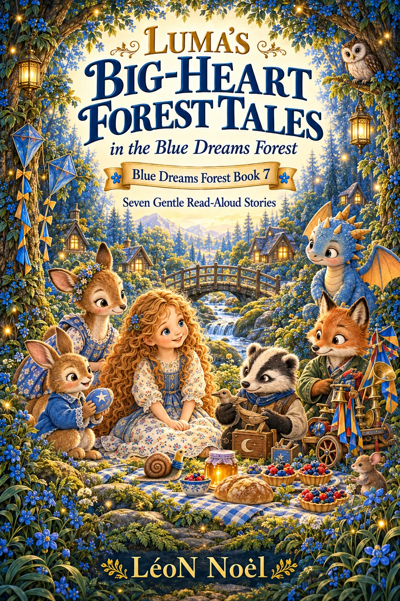

Blue Dreams Forest · Ages 4–8
Luma’s Big-Heart Forest Tales
Seven Gentle Read-Aloud Stories

Inside the book
Feelings, empathy & brave steps
Seven gentle forest stories about frustration, jealousy, disappointment, helping well, courage, anger, and the sometimes-difficult work of saying sorry.
Like the other Blue Dreams Forest volumes, the collection is designed for warm shared reading and gentle conversation rather than turning storytime into a lesson.
Stories in this volume
Seven visits to the Blue Dreams Forest.
- Luma and the Kite That Wouldn't Fly
- Luma and Lina's Prickly Feeling
- Luma and Pip Badger's Ruined Tuesday
- Luma and the Great Cheering-Up Catastrophe
- Luma and the Bridge of Brave Steps
- Luma and the Very Angry Morning
- Luma and the Sorry That Got Stuck
Why this story can help
Seven forest stories for feelings that are not always neat or easy.
This volume makes room for frustration, jealousy, disappointment, anger, courage, helping, and apology. Rather than smoothing those emotions away, the stories give children and grown-ups several different moments to notice how empathy and repair can develop.
Good for
- Frustration and jealousy
- Empathy and helping well
- Apology, courage, and repair
Looking for a screen-free follow-up? Browse the free printable library →
Explore more